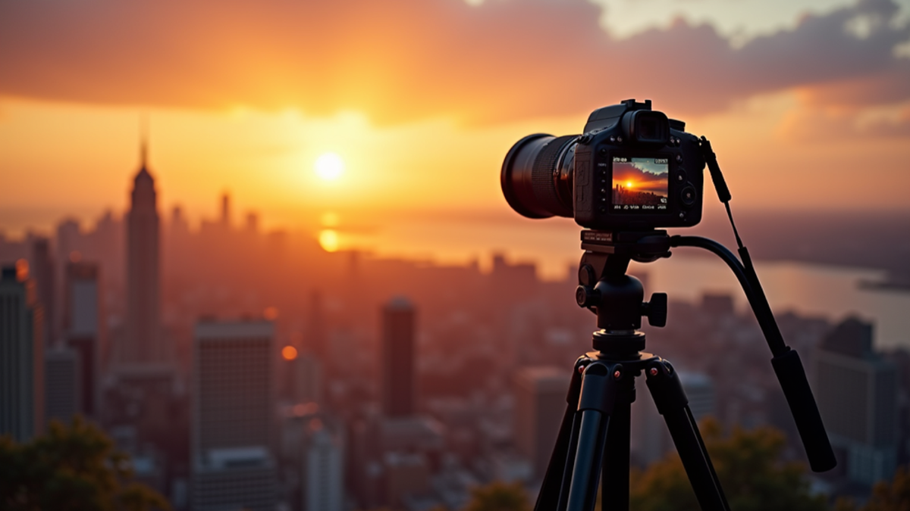

Mastering Photography and Videography for Impactful Visual Storytelling Techniques
Creating visuals that truly resonate takes more than just pointing a camera and clicking. Over the years, I’ve learned that mastering visual storytelling techniques is the key to producing images and videos that leave a lasting impression.

Creating visuals that truly resonate takes more than just pointing a camera and clicking. Over the years, I’ve learned that mastering visual storytelling techniques is the key to producing images and videos that leave a lasting impression. Whether you’re capturing moments for personal projects or professional work, understanding how to tell a story through your lens transforms ordinary shots into powerful narratives.
Let me walk you through some essential strategies that have helped me elevate my craft. These tips are straightforward, practical, and designed to boost your confidence behind the camera.
Understanding Visual Storytelling Techniques
Visual storytelling is about more than just aesthetics. It’s about conveying emotions, ideas, and messages through images and videos. When you master these techniques, your audience doesn’t just see your work—they feel it.
Here are some core principles I always keep in mind:
- Composition: The way elements are arranged in your frame guides the viewer’s eye and sets the mood. Use the rule of thirds, leading lines, and framing to create balance and interest.
- Lighting: Light shapes your subject and sets the tone. Natural light can be soft and flattering, while artificial light allows for creative control.
- Color: Colors evoke emotions. Warm tones can feel inviting, while cool tones might create a sense of calm or melancholy.
- Movement: In videography, movement adds dynamism. Even in photography, capturing motion blur or a decisive moment can tell a story.
- Context: Backgrounds and surroundings provide clues about the story. Choose locations and props that enhance your narrative.
By combining these elements thoughtfully, you create visuals that communicate clearly and powerfully.
Practical Tips to Enhance Your Visual Storytelling Techniques
Now that you understand the basics, let’s dive into actionable steps you can take to improve your work immediately.
1. Plan Your Shots
Before you start shooting, think about the story you want to tell. Ask yourself:
- What is the main message or emotion?
- Who is the subject, and what is their role in the story?
- What setting will best support the narrative?
Sketching a simple storyboard or shot list can save time and keep your vision focused.
2. Use Natural Light Whenever Possible
Natural light is one of the most flattering and versatile tools you have. Early morning and late afternoon, known as the golden hours, provide soft, warm light that enhances skin tones and textures.
If you’re shooting indoors, position your subject near windows to take advantage of this light. Avoid harsh midday sun, which can create unflattering shadows.
3. Experiment with Angles and Perspectives
Don’t settle for eye-level shots all the time. Try shooting from high angles, low angles, or even close-ups to add variety and interest. Different perspectives can reveal new details and emotions.
For example, a low-angle shot can make your subject appear powerful, while a close-up can capture subtle expressions or textures.
4. Focus on Details
Sometimes, the small things tell the biggest stories. Zoom in on hands, textures, or objects that relate to your subject. These details add depth and authenticity to your visuals.
5. Edit Thoughtfully
Post-processing is where you can fine-tune your story. Adjust brightness, contrast, and color balance to enhance mood without overdoing it. Keep edits natural to maintain authenticity.
For videos, use cuts and transitions that support the pacing of your story. Avoid flashy effects that distract from the message.
Essential Gear and Tools for Impactful Visuals
You don’t need the most expensive equipment to create stunning visuals, but having the right tools helps. Here’s what I recommend for beginners and intermediate creators:
- Camera: A DSLR or mirrorless camera with manual settings gives you control over exposure and focus. Smartphones with good cameras can also work well.
- Lenses: A versatile zoom lens (e.g., 24-70mm) covers most situations. A prime lens with a wide aperture (e.g., 50mm f/1.8) is great for portraits and low light.
- Tripod: Stabilizes your shots, especially for long exposures or video.
- Lighting: Reflectors and portable LED lights help shape light when natural sources aren’t enough.
- Editing Software: Adobe Lightroom and Premiere Pro are industry standards, but free options like DaVinci Resolve and Snapseed are excellent too.
Investing in these basics will improve your ability to capture and craft compelling stories.
How to Use Photography and Videography to Connect Emotionally
One of the most rewarding aspects of this craft is its power to connect people emotionally. When I shoot, I focus on creating moments that evoke feelings—joy, nostalgia, curiosity, or empathy.
Here’s how you can do the same:
- Capture Authentic Moments: Candid shots often tell the truest stories. Encourage your subjects to relax and be themselves.
- Use Symbolism: Objects, colors, and settings can symbolize larger ideas. For example, a wilting flower might represent loss or change.
- Tell a Complete Story: Think about beginning, middle, and end. Even a single image can suggest a narrative arc.
- Engage the Senses: Use visuals that imply sounds, smells, or textures to immerse your audience.
By focusing on emotional connection, your visuals become more memorable and impactful.
Developing Your Unique Style and Voice
Finally, remember that mastering visual storytelling is also about discovering your own style. Don’t be afraid to experiment and break rules once you understand them.
Ask yourself:
- What subjects inspire me most?
- What mood or tone do I want to convey consistently?
- How can I make my work stand out?
Keep practicing, seek feedback, and stay curious. Your unique perspective is your greatest asset.
Mastering these visual storytelling techniques will transform your approach to photography and videography. With patience and practice, you’ll create images and videos that not only look great but also speak volumes. Keep exploring, keep shooting, and most importantly, keep telling your story.
More articles
Building a Cohesive Visual System
A cohesive visual system helps a brand look more established. That means the photography, video, color grade, crop ratios, lighting style, and editing pace all feel like they belong together. This is especially useful for websites and campaigns where images appear side by side. A portrait, product detail, space, food image, drone shot, and motion clip can still feel related if they share consistent color, contrast, mood, and direction. Planning that visual language before production helps the final gallery work as a complete system rather than a collection of unrelated assets.
Why Photography and Video Should Work Together
Photography and video are strongest when they are planned as one visual system. A brand may need cinematic motion for attention, still photography for websites and press, vertical clips for social media, and clean portraits for trust. When those assets are captured with a shared lighting approach, color palette, and production plan, the final campaign feels more cohesive. The viewer may not notice every technical choice, but they do feel the difference between disconnected content and a unified visual identity.
Good visual storytelling starts with purpose. Before cameras come out, the project should define what the audience needs to understand, what emotion the piece should carry, and what action the viewer should take next. For a commercial client, that may mean showing process, quality, people, place, scale, or atmosphere. For a personal brand, it may mean communicating confidence and expertise. For a film or editorial piece, it may mean building tension, rhythm, and mood. Those decisions shape lens choice, camera movement, lighting, framing, pacing, and the final edit.
The practical benefit of combining photography and video is efficiency. A well-planned production can create hero stills, behind-the-scenes clips, campaign images, interview frames, detail shots, and social assets in one organized shoot. That gives clients more value from the same production day and keeps the visual language consistent across platforms. The result is not simply more content; it is a stronger library of assets that can support marketing, recruitment, press, sales, and storytelling with a consistent level of polish.
How to Get More Value From the Session
The most useful photography projects are planned with final placement in mind. Before booking, list the places where the images will appear: website hero sections, service pages, LinkedIn, Google Business Profile, proposals, press releases, casting submissions, printed ads, menus, or social campaigns. That simple step changes how the session should be photographed. Horizontal frames need room for headlines, vertical frames need clean subject placement for mobile, and square crops need enough breathing room to avoid cutting into the subject. When those deliverables are considered before the shoot, the final gallery gives you stronger options and reduces the need for last-minute compromises.
It also helps to think about consistency across the full brand. Color, contrast, background, wardrobe, styling, retouching, and file naming all affect how professional the final images feel once they are published. For businesses, that consistency can make a website, team page, restaurant menu, architecture portfolio, or campaign deck feel more established. For individuals, it can make a headshot, biography, speaking profile, and social presence feel aligned. The goal is to create photographs that look beautiful on their own and still work hard in the real places clients need to use them.